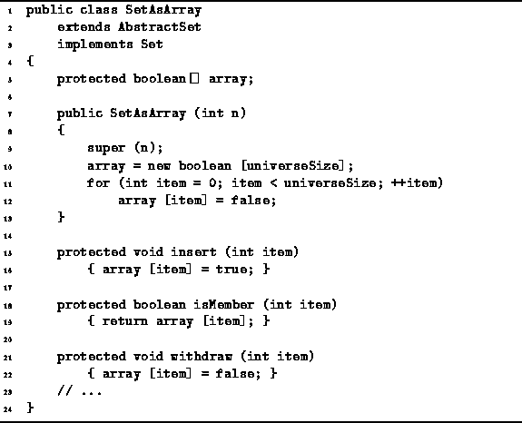

Data Structures and Algorithms
with Object-Oriented Design Patterns in Java
Data Structures and Algorithms
with Object-Oriented Design Patterns in Java
Program  defines the constructor for the SetAsArray
class as well as the three basic operations--insert, isMember, and withdraw.
The constructor takes a single argument
defines the constructor for the SetAsArray
class as well as the three basic operations--insert, isMember, and withdraw.
The constructor takes a single argument
 ,
which defines the universe and, consequently,
the size of the array of boolean values.
The constructor creates the empty set by initializing
all the elements of the boolean array to false.
Clearly, the running time of the constructor is O(N).
,
which defines the universe and, consequently,
the size of the array of boolean values.
The constructor creates the empty set by initializing
all the elements of the boolean array to false.
Clearly, the running time of the constructor is O(N).

Program: SetAsArray class constructor, insert, withdraw, and isMember methods.
The insert method is used to put an item into the set. The method takes an int argument that specifies the item to be inserted. Then the corresponding element of array is set to true to indicate that the item has been added to the set. The running time of the insert operation is O(1).
The isMember method is used to test whether a given item is an element of the set. The semantics are somewhat subtle. Since a set does not actually keep track of the specific object instances that are inserted, the membership test is based on the value of the argument. The method simply returns the value of the appropriate element of the array. The running time of the isMember operation is O(1).
The withdraw method is used to take an item out of a set. The withdrawal operation is the opposite of insertion. Instead of setting the appropriate array element to true, it is set to false. The running time of the withdraw is identical to that of insert, viz., is O(1).
 Copyright © 1998 by Bruno R. Preiss, P.Eng. All rights reserved.
Copyright © 1998 by Bruno R. Preiss, P.Eng. All rights reserved.